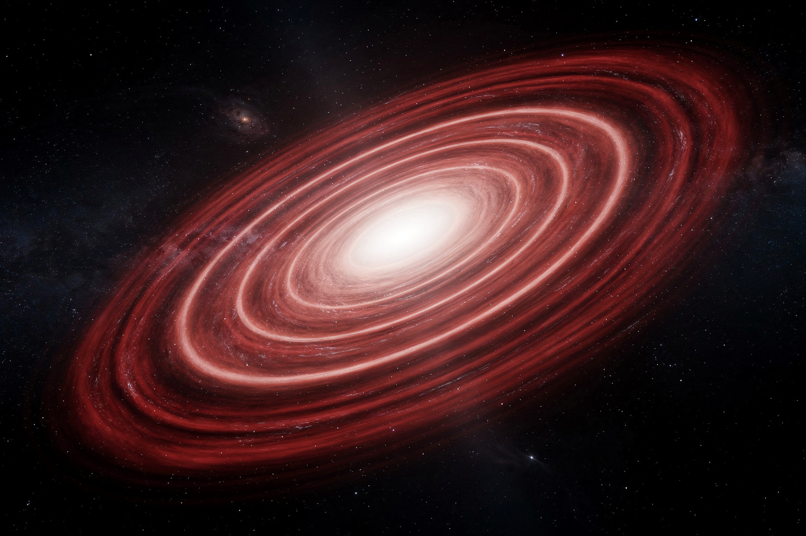

Рабочая заметка · оптика и акустика · часть XVI
Эффект Доплера: почему сирена меняет тон, а звёзды — цвет
Один и тот же геометрический эффект — источник волны сближается или удаляется от вас — заставляет сирену «петь» и позволяет astronомам взвесить всю наблюдаемую Вселенную.
В 1842 году Кристиан Доплер предсказал: частота волны, которую вы слышите или видите, зависит от того, как источник движется относительно вас. Источник, летящий вам навстречу, «поджимает» волны впереди себя — вы слышите более высокий тон или видите более синий свет. Тот же эффект, применённый не к сирене, а к далёким галактикам, привёл к открытию расширяющейся Вселенной. В этой заметке — звуковой и световой варианты эффекта с числами, и то, как он превратился в инструмент измерения скорости разбегания космоса.

Эффект в двух словах
| Волна | Приближается | Удаляется |
|---|---|---|
| Звук | тон выше (частота растёт) | тон ниже (частота падает) |
| Свет | синее смещение (частота растёт) | красное смещение (частота падает) |
Наглядная аналогия из описания самого Доплера: если вы бросаете камешек в пруд каждую секунду, стоя на месте, круги расходятся равномерно. Если вы при этом ИДЁТЕ вперёд, круги впереди вас оказываются сближены (вы почти догоняете предыдущий), а позади — растянуты. Ровно то же происходит с гребнями звуковой или световой волны, когда источник движется.
Звук: сирена скорой помощи
Формулировка (движущийся источник). Частота, которую слышит неподвижный наблюдатель, когда источник приближается со скоростью vs:
Численный пример: сирена скорой помощи излучает f = 900 Гц, машина приближается со скоростью vs = 34 м/с (122 км/ч). Найдите частоту, которую слышит человек впереди.
После того как машина проедет мимо, частота резко упадёт (удаление, знак «+» в знаменателе) — именно этот скачок тона вниз в момент проезда мимо вас все слышали хотя бы раз в жизни.
Свет: красное и синее смещение
Формулировка. Для скоростей, много меньших скорости света (v ≪ c), сдвиг длины волны пропорционален скорости:
Численный пример: спектральная линия звезды в лаборатории имеет длину волны λ = 500 нм. У далёкой звезды та же линия наблюдается на λ' = 505 нм. Найдите скорость звезды относительно нас.
Линия сдвинулась в сторону БОЛЬШИХ длин волн (в красную сторону спектра) — значит, звезда УДАЛЯЕТСЯ от нас со скоростью 3000 км/с (1% скорости света). Астрономы измеряют скорости звёзд и галактик именно так — не гоняясь за ними с радаром, а сравнивая положение знакомых спектральных линий (например, линий водорода) с их лабораторными значениями.
Сквозной пример: как работает радар ГИБДД
Радар не просто ловит доплеровский сдвиг один раз — сигнал проходит ДВОЙНОЙ путь: радар излучает волну на автомобиль (первый сдвиг, автомобиль «видит» смещённую частоту как движущийся наблюдатель), автомобиль отражает её обратно (второй сдвиг, теперь уже автомобиль — движущийся источник для неподвижного радара). Оба сдвига складываются, и для v ≪ c общая формула упрощается до:
Численный пример: радар на частоте f = 10 ГГц измеряет сдвиг от автомобиля, приближающегося со скоростью v = 30 м/с (108 км/ч). Найдите доплеровский сдвиг частоты.
Электроника радара измеряет именно эти 2 кГц сдвига (ничтожная доля от 10 ГГц несущей частоты, но легко измеримая современной электроникой) и мгновенно пересчитывает их обратно в скорость по той же формуле — весь расчёт занимает доли секунды.
Куда это ведёт: закон Хаббла
В 1920-х годах Эдвин Хаббл, измеряя доплеровское красное смещение далёких галактик тем же методом из §3, заметил закономерность: ПОЧТИ ВСЕ галактики удаляются от нас, и чем дальше галактика, тем БЫСТРЕЕ она удаляется. Это открытие — прямая экспериментальная основа теории расширяющейся Вселенной и Большого взрыва.
Строго говоря, космологическое красное смещение далёких галактик — это НЕ движение галактик СКВОЗЬ пространство (как у сирены или автомобиля), а растяжение самого ПРОСТРАНСТВА между нами и галактикой по мере расширения Вселенной, которое растягивает и длину волны света, летящего через это пространство. На малых расстояниях и скоростях математика неотличима от обычного эффекта Доплера (§3), но при очень больших скоростях (сравнимых со скоростью света) для точных расчётов нужна уже общая теория относительности, а не просто формула Доплера. Полный разбор закона Хаббла — следующая заметка серии, про космологию.
На сайте это отдельный закон, если хочется пройти глубже:
Эксперимент дома
Привяжите небольшой звучащий предмет (например, телефон с включённым будильником/непрерывным звуком, завёрнутый в носок для мягкости, или специальную «доплеровскую» жужжалку-свисток на верёвке, если есть) к прочной верёвке длиной около метра и раскрутите над головой по кругу с постоянной скоростью, стоя на открытом пространстве.
Что заметить тон звука заметно «плавает» — выше, когда источник летит В ВАШУ сторону (приближается к вам по касательной окружности), ниже, когда улетает от вас на противоположной стороне круга. Это тот же эффект, что у сирены (§2), только источник движется по кругу, а не по прямой.
В следующий раз, когда мимо будет проезжать поезд, машина с открытым окном (играющая музыку с чёткой нотой) или сирена — прислушайтесь специально к моменту, когда источник проезжает мимо вас.
Что заметить резкий скачок тона ВНИЗ ровно в момент, когда источник оказывается точно напротив вас (vвдоль луча меняет знак с «приближение» на «удаление») — эффект, который вы наверняка слышали тысячи раз, не задумываясь, что это именно формула §2 в чистом виде.
Задачи для проверки
Сначала подумайте сами, затем откройте решение. Решение везде идёт по схеме: Дано → Закон → Решение → Ответ.
1. Поезд гудит на частоте 500 Гц и удаляется от вас со скоростью 20 м/с (скорость звука 340 м/с). Какую частоту вы слышите?
Дано f = 500 Гц, vs = 20 м/с (удаление), c = 340 м/с.
Закон эффект Доплера для удаляющегося источника (§2): f' = f·c/(c+vs).
Решение f' = 500·340/360 ≈ 472.2 Гц.
Ответ ≈472 Гц — ниже исходных 500 Гц, как и ожидается при удалении.
2. Спектральная линия галактики (лабораторная длина волны 400 нм) наблюдается смещённой до 404 нм. Найдите скорость галактики и направление (приближается/удаляется).
Дано λ = 400 нм, λ' = 404 нм.
Закон формула Доплера для света (§3): v = cΔλ/λ.
Решение Δλ = 4 нм; v = (3×10⁸)·4/400 = 3×10⁶ м/с = 3000 км/с.
Ответ 3000 км/с, удаляется (длина волны выросла — красное смещение).
3. Радар на частоте 20 ГГц регистрирует сдвиг 4 кГц от приближающегося автомобиля. Найдите скорость автомобиля.
Дано f = 20 ГГц, Δf = 4 кГц.
Закон формула радара (§4): Δf = 2vf/c.
Решение v = Δf·c/(2f) = 4000·(3×10⁸)/(2·20×10⁹) = 1.2×10¹²/4×10¹⁰ = 30 м/с.
Ответ 30 м/с (108 км/ч).
4. Почему при использовании радара сдвиг частоты вычисляют по формуле с множителем 2, а не по обычной однократной формуле Доплера?
Закон §4 — механика работы радара.
Решение сигнал испытывает Доплеровский сдвиг ДВАЖДЫ: сначала при распространении от радара к движущемуся автомобилю (автомобиль как движущийся приёмник видит смещённую частоту), затем при отражении обратно от автомобиля к радару (автомобиль теперь выступает как движущийся ИСТОЧНИК отражённой волны для неподвижного радара-приёмника). Два одинаковых по знаку сдвига складываются, отсюда множитель 2.
Ответ двойное прохождение сигнала — туда до цели и обратно до радара.
5. Чем принципиально отличается космологическое красное смещение далёких галактик от «обычного» эффекта Доплера у сирены?
Закон §5, важная тонкость закона Хаббла.
Решение у сирены источник физически движется СКВОЗЬ неподвижное пространство/воздух. У далёких галактик смещение вызвано растяжением самого пространства между нами и галактикой по мере расширения Вселенной — галактика не обязательно «летит» сквозь пространство в привычном смысле, скорее пространство между нами увеличивается, растягивая и длину волны проходящего через него света.
Ответ движение сквозь пространство (сирена) против растяжения самого пространства (космологическое смещение) — на малых скоростях математически неразличимо, на больших — требует общей теории относительности.
Опечатка, неверная формула, число не сходится, коряво объяснено — напишите нам: feedback@bridge42worlds.org. Каждое сообщение реально читается, разбирается и по нему вносится правка — это не «в стол».